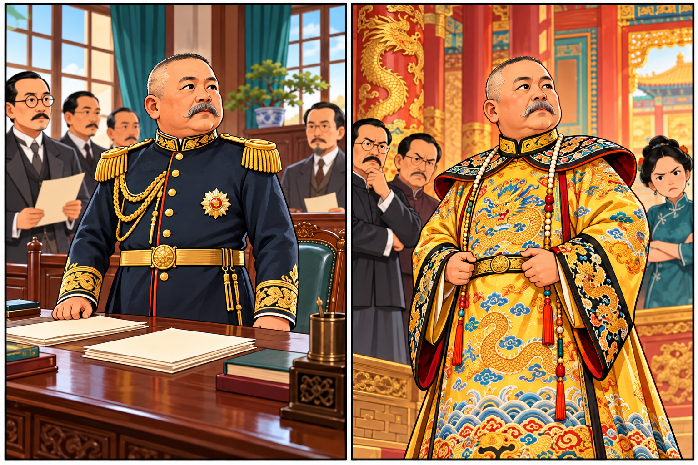
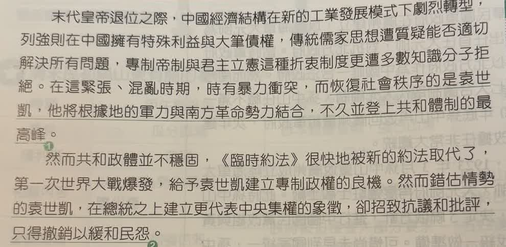
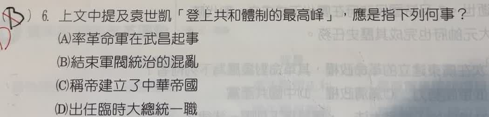

分享原卷｜第 6 題
完整原題
作答所需文章／材料
【清末民初的國家體制演變】 末代皇帝退位之際，中國經濟結構在新的工業發展模式下劇烈轉型，列強則在中國擁有特殊利益與大筆債權，傳統儒家思想遭質疑能否適切解決所有問題，專制帝制與君主立憲這種折衷制度更遭多數知識分子拒絕。在這緊張、混亂時期，時有暴力衝突，而恢復社會秩序的是袁世凱，他將根據地的軍力與南方革命勢力結合，不久並登上共和體制的最高峰。 然而共和政體並不穩固，《臨時約法》很快地被新的約法取代了，第一次世界大戰爆發，給予袁世凱建立專制政權的良機。然而錯估情勢的袁世凱，在總統之上建立更代表中央集權的象徵，卻招致抗議和批評，只得撤銷以緩和民怨。上文中提及袁世凱「登上共和體制的最高峰」，應是指下列何事？
(A) 率革命軍在武昌起事
(B) 結束軍閥統治的混亂
(C) 稱帝建立了中華帝國
(D) 出任臨時大總統一職
先想一想，再查看答案、解說與原圖
原卷作答：B
正確答案：D。袁世凱接任臨時大總統，成為當時共和國的國家元首。
逐項解析
| 選項與原句 | 判讀 | 句意與判斷理由 |
|---|---|---|
| (A) 率革命軍在武昌起事 | 不選 | 武昌起義不是袁世凱領軍發動，也不是出任共和國最高職位。 |
| (B) 結束軍閥統治的混亂 | 不選 | 題目問的是職位，不是平定混亂的功績；袁世凱並未結束軍閥割據。 |
| (C) 稱帝建立了中華帝國 | 不選 | 稱帝是改行帝制，不能解釋仍在共和體制內的最高職位。 |
| (D) 出任臨時大總統一職 | 應選 | 袁世凱接任臨時大總統，成為當時共和國的國家元首。 |
詳細說明與解題步驟
一、先注意共和體制四個字
最高峰比喻最高政治職位，但題目限定在共和制度內。因此指的是臨時大總統，不是皇帝，選D。
二、對照文章的兩個階段
前段的登上共和體制最高峰，是1912年就任臨時大總統；後段在總統之上建立中央集權象徵，才是在說後來推行帝制。不能把前後兩段合成同一件事。
三、原選B的錯誤所在
文章提到恢復社會秩序，是背景敘述；題目圈定的句子是在說職位。恢復一時秩序也不等於結束軍閥割據，袁世凱去世後更出現軍閥爭戰。
抓限定語比單看權力大小更重要：共和國元首是總統，改稱皇帝就是破壞共和。

核對註記：已核對題幹、全部選項與必要材料；教材對應課次未確認，歸綜合。
原圖（僅本題）

